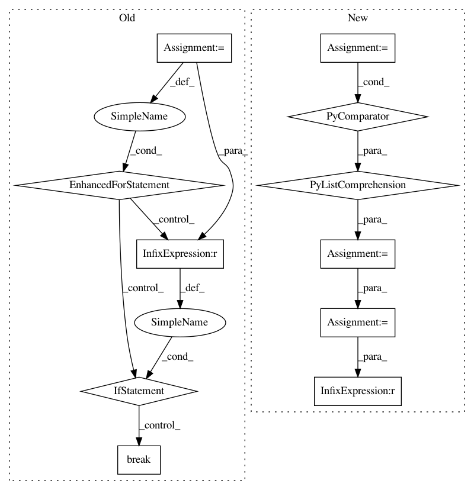

28793deaf98b37ef5d9425c1ec975a11b397e465,dask_ml/model_selection/_incremental.py,BaseIncrementalSearchCV,_get_best,#BaseIncrementalSearchCV#Any#Any#,505
Before Change
best_index = -1
// history_results is sorted by (model_id, partial_fit_calls)
// best is the model_id with the highest partial fit calls
for k, v in itertools.groupby(history_results, key=key):
v = list(v)
best_index += len(v)
if k == best_model_id:
break
return results.models[best_model_id], best_index
def _process_results(self, results):
Called with the output of `fit` immediately after it finishes.
After Change
return cv_results
def _get_best(self, results, cv_results):
scores = {
k: v[-1]["score"] for k, v in results.info.items() if k in results.models
}
// Could use max(scores, key=score.get), but what if score is repeated?
// Happens in the test case a lot
model_ids = list(scores.keys())
scores = [scores[k] for k in model_ids]
model_idx = np.argmax(scores)
best_model_id = model_ids[model_idx]
best_est = results.models[best_model_id]
idx = cv_results["model_id"] == best_model_id
assert idx.sum() == 1
best_idx = np.argmax(idx)
return best_idx, best_est
In pattern: SUPERPATTERN
Frequency: 3
Non-data size: 11
Instances
Project Name: dask/dask-ml
Commit Name: 28793deaf98b37ef5d9425c1ec975a11b397e465
Time: 2018-10-13
Author: github@stsievert.com
File Name: dask_ml/model_selection/_incremental.py
Class Name: BaseIncrementalSearchCV
Method Name: _get_best
Project Name: scikit-learn-contrib/DESlib
Commit Name: bba1901f835525551dde9ec1537d041abc88d293
Time: 2021-04-08
Author: rafaelmenelau@gmail.com
File Name: deslib/static/oracle.py
Class Name: Oracle
Method Name: predict
Project Name: NeuromorphicProcessorProject/snn_toolbox
Commit Name: 9a062c6473109dfdd545d1db84f62b5037c53128
Time: 2017-06-13
Author: bodo.rueckauer@gmail.com
File Name: snntoolbox/model_libs/caffe_input_lib.py
Class Name: ModelParser
Method Name: get_outbound_layers